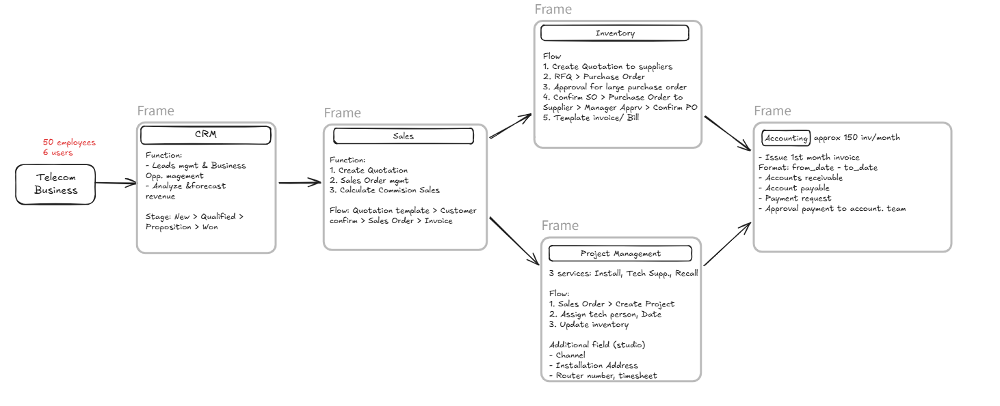
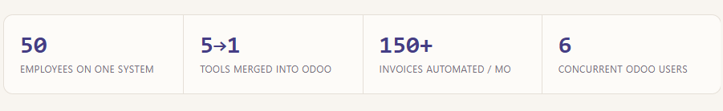

Case Study
ERP Architecture & Business Process Mapping (Odoo)
A fragmented telecom operation, rebuilt as one connected Odoo system — from first quote to final invoice.
The Problem
Fragmented tools, no shared picture
The business was running on fragmented software and manual processes. Data was scattered across tools, and there was little visibility between sales, installation, and accounting — no one could see the full picture of a job from quote to invoice.
The Build
One Odoo structure, one workflow
I designed and implemented a centralized Odoo ERP structure, mapping the end-to-end workflow that connects CRM, Sales, Project Management, and Accounting — so a lead follows the same system, and the same data, from first contact to final invoice.

The Result
One place, full visibility
Everything now lives in one place. The company automates 150+ invoices a month, manual data entry has dropped sharply, and every department finally has clear visibility into where a job actually stands.
